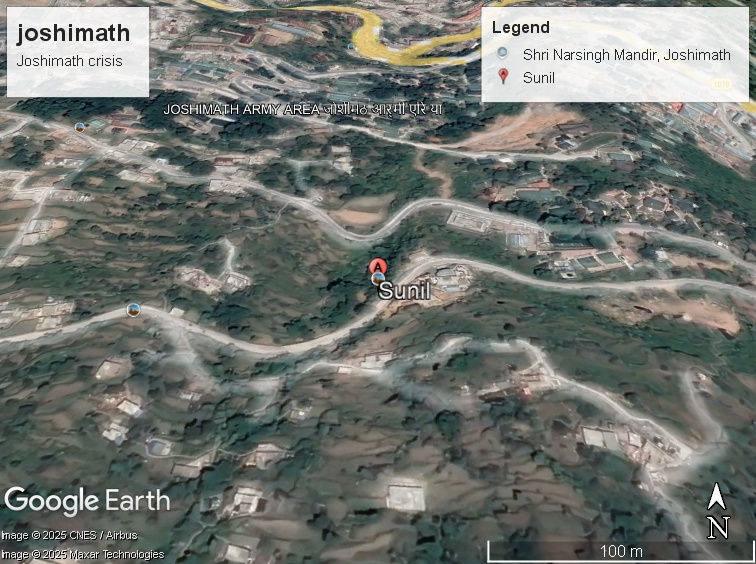
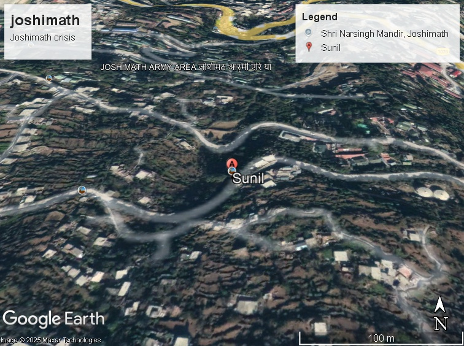
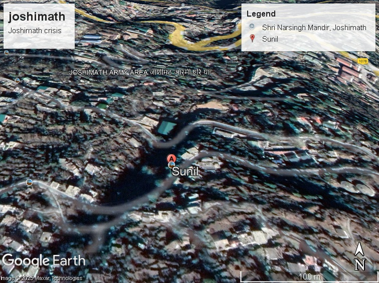

Land Use & Stability Evolution
Compare satellite imagery year-wise to observe changes in land use and stability over time.



2015
2020
2025
Area Statistics Overview (2015)
Total Urban Area:
10,000 sq km
Green Cover:
9,000 sq km
Water Bodies:
1,800 sq km
Population Density:
350 per sq km